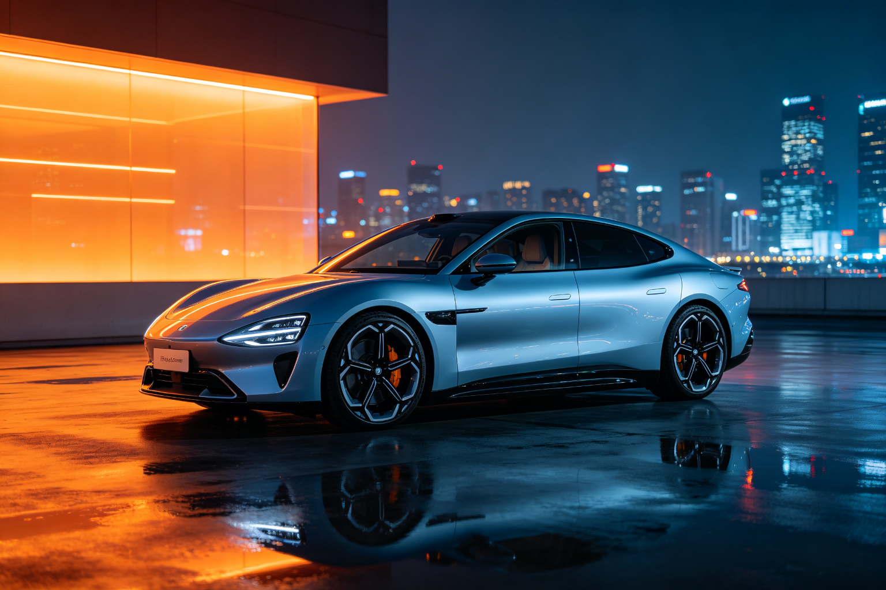

小米 SU7 为什么看起来就"快"？BEA 双极情绪美学拆解
20 万级新能源轿车，为什么设计感在线？用 BEA 框架从元素级极性到范式定位，拆解小米 SU7 的设计语言。
一、先说结论
小米 SU7 在 BEA 框架下定位为 「崇高震撼偏冷峻」，危极综合权重 W(T) ≈ 0.58，处于「崇高震撼」范式的上沿，接近「冷峻克制」。
这是一个非常精准的定位：对于 20-30 万级运动轿车，用户想要的就是"看起来快、有力量感、有攻击性"。SU7 把危极推到了崇高范式的上沿，但仍然在安全阈值内，没有越阈变成"凶"或"丑"。
二、BEA 30 秒速览
BEA（双极情绪美学）的核心： - 亲极 P+（圆润/柔色/光滑）→ 让人想接近 - 危极 T−（尖锐/强对比/突变）→ 制造唤醒与张力 - 美感 = 双极在秩序中组合，危极不越阈
量化公式：W(T) = Σ wᵢ · (tᵢ/10)，各维度危极强度的加权平均值。
汽车外形的 BEA 权重：形体曲面/动势 30%、特征线条 25%、灯组/图形 15%、比例姿态 15%、材质光影 15%。
三、小米 SU7 逐维度拆解
3.1 形体曲面/动势：T=7（危极偏强）
BEA 分析： - 车身采用了明显的楔形姿态，前低后高——危极提神（前冲动势） - 车顶线条从 A 柱开始快速下滑，形成溜背造型——危极提神 - 车尾有一个轻微的上翘尾翼，增加了运动感——危极提神 - 车身侧面有肌肉感的曲面，但不是完全圆润，而是有张力的曲面
为什么这么设计：运动轿车的核心就是"看起来快"。楔形姿态、溜背造型、上翘尾翼，都是在视觉上制造"前冲动势"，让车即使静止也看起来在运动。这是 BEA 说的"静态产品暗示运动"的标准手法。
3.2 特征线条：T=6（危极偏强）
BEA 分析： - 侧身有一条贯穿前后的特征棱线，从前翼子板延伸到尾灯——危极提神 - 这条棱线位置较高，形成了"肩线"，增加了肌肉感 - 下包围有内凹的特征线，增加了侧面的层次感 - 车门把手采用了隐藏式设计，保持了侧面的干净——秩序统一
关键：SU7 的特征线条比尊界 S800 更锐利、更明显，因为运动轿车需要更强的张力。但它仍然保持了克制，没有"棱线通胀"——主特征线只有 1-2 条，其他地方保持干净。
3.3 灯组/图形：T=8（危极强）
BEA 分析： - 前脸大灯采用了锐利的"柳叶"造型，细长、尖锐——危极提神 - 大灯内部结构精密，有明显的切面——危极提神 - 尾灯采用了贯穿式设计，两端向上翘起，形成了"机甲感"——危极提神 - 灯组熄灭态也有明显的造型，不是简单的黑色面板
这是 SU7 最锐利的元素（T=8），也是它"看起来凶"的主要来源。但注意：T=8 还在安全阈值内（T=10 才是越阈），而且它被大面积的柔和车身曲面（亲极）包围，形成了强烈的对比。
BEA 诊断：灯组 T=8 是 SU7 的"提神点"，但也是它的"风险点"——对于阈值偏低的用户，这个灯组可能会显得"太凶"。
3.4 比例姿态：T=6（危极偏强）
BEA 分析： - 车长 4997mm，轴距 3000mm，中大型轿车比例——稳定（亲极） - 车高 1455mm，非常低趴——运动感（危极） - 前后悬短，车轮接近四角——运动感（危极） - 轮毂尺寸 19-20 寸，与车身比例协调——不夸张 - 宽高比很大，视觉重心非常低——贴地、可控（亲极+危极叠加）
为什么这个比例看起来快：BEA 的"动势（静态暗示）"维度——前冲楔形、上扬攻击线、蓄势张力。SU7 的低趴+宽体+短前后悬，共同制造了"蓄势待发"的视觉感受。
3.5 材质光影：T=5（中性）
BEA 分析： - 车身漆面光泽适中，有一定的反光——中性 - 下包围采用了黑色塑料材质，与车身形成对比——危极提神 - 车窗边框采用了黑色装饰，形成了"悬浮车顶"的效果——秩序统一 - 整体光影有张力，大面反光有明显的明暗过渡——不是完全柔和
四、W(T) 计算与范式定位
4.1 加权计算
| 维度 | 权重 | 危极强度 t | wᵢ·(t/10) |
|---|---|---|---|
| 形体曲面/动势 | 0.30 | 7 | 0.210 |
| 特征线条 | 0.25 | 6 | 0.150 |
| 灯组/图形 | 0.15 | 8 | 0.120 |
| 比例姿态 | 0.15 | 6 | 0.090 |
| 材质光影 | 0.15 | 5 | 0.075 |
| 合计 | 1.00 | W(T) = 0.645 |
注：以上为基于公开图片的估算，实际值可能因配色/选装不同而有差异。
4.2 范式定位
W(T)=0.645，落在 「冷峻克制」范式（0.60–0.66）的上沿，接近「先锋反叛」（0.66–0.85）。
但更准确的定位是「崇高震撼偏冷峻」，因为： - 它的单元素强度很高（灯组 T=8），符合崇高范式的"单元素高强度"要求 - 它有等量的秩序安抚（比例精当、特征线克制、前后呼应） - 整体不是"冷峻的极简"，而是"崇高的力量感"
这个定位非常适合运动轿车： - 比纯崇高（如保时捷 Taycan）更冷峻、更有攻击性 - 比纯冷峻（如特斯拉 Model 3）更有力量感、更有设计感 - 刚好卡在"运动"和"攻击性"之间的甜蜜点
五、BEA 四维评分卡
| 维度 | 得分 | 满分 | 评价 |
|---|---|---|---|
| 双极张力 | 23 | 25 | 对立非常清晰，楔形+溜背+锐利灯组，张力十足 |
| 结构秩序 | 20 | 25 | 主辅分明，比例精当，但细节统一性还有提升空间 |
| 阈值安全 | 18 | 25 | 灯组 T=8 接近阈值，对部分用户可能显得"太凶" |
| 语境适配 | 23 | 25 | 精准匹配运动轿车定位，"看起来快"的目标达成 |
| 总分 | 84 | 100 | 成熟作品 |
84 分，属于成熟作品。扣分项主要在阈值安全（灯组偏锐）和结构秩序（细节统一性）。
六、SU7 设计的三个 BEA 亮点
6.1 "静态暗示运动"的教科书级应用
SU7 即使停在那里，也看起来在运动。这是 BEA 说的"动势（静态暗示）"： - 前低后高的楔形姿态 → 前冲动势 - 溜背造型 → 速度感 - 上翘尾翼 → 下压力暗示 - 低趴宽体 → 贴地飞行感
这些元素共同制造了"蓄势待发"的视觉感受，是运动轿车设计的核心。
6.2 危极集中策略
SU7 把最锐利的元素（灯组 T=8）集中在车头和车尾，而车身大面保持相对柔和。这符合 BEA 的"从属极集中到高价值细节"原则： - 车头是用户第一眼会看的地方 → 把危极集中在这里，提神效果最大化 - 车身大面是用户长期观看的地方 → 保持柔和，避免疲劳 - 这种"远看凶、近看柔"的结构，比"全身都凶"更高级
6.3 比例的精准控制
SU7 的比例经过精心计算： - 车长/轴距比 = 4997/3000 = 1.666（接近黄金比 1.618） - 车高/车宽比 = 1455/1963 = 0.741（低趴感） - 前后悬/轴距比 = （945+1052）/3000 = 0.666（短前后悬）
这些比例不是随便定的，而是在统一的模数体系内计算出来的。这符合 BEA 的"比例/模数"秩序手段：固定比例组织尺寸，消化张力。
七、可以改进的地方（BEA 处方）
7.1 降低灯组危极（T=8→7）
- 大灯的锐利程度可以稍微降低，增加一点柔和过渡
- 预期 W(T) 从 0.645 降到 0.63，更稳妥地落在冷峻范式内
- 对于家庭用户，降低灯组的攻击性可以提升亲和力，扩大受众
7.2 增加细节统一性
- 前后灯组的内部结构可以增加更多呼应元素
- 车门把手、车窗边框等细节可以采用更统一的设计语言
- 提升"整体感"，让车看起来更像一个完整的设计作品
7.3 提供更柔和的配色选择
- 当前配色偏运动（黑/白/灰/蓝），可以增加一个更暖的配色（如"暖银"）
- 给偏好柔和的用户一个选择，扩大受众覆盖
- 暖配色可以天然降低 W(T)，让同一辆车有不同的范式定位
八、SU7 vs 尊界 S800：BEA 对比
| 维度 | 小米 SU7 | 尊界 S800 |
|---|---|---|
| 范式定位 | 崇高偏冷峻 | 均衡偏崇高 |
| W(T) | 0.645 | 0.525 |
| 核心情绪 | 速度、力量、攻击 | 大气、稳重、豪华 |
| 最锐元素 | 灯组 T=8 | 灯组 T=7 |
| 四维评分 | 84 | 88 |
| 目标用户 | 年轻人、运动爱好者 | 家庭用户、商务用户 |
这两辆车的设计定位完全不同，但都在 BEA 框架下做到了"范式与受众匹配"。SU7 用更高的 W(T) 服务运动用户，M9 用更均衡的 W(T) 服务家庭用户——没有"最好的设计"，只有"最匹配目标用户的设计"。
九、总结
小米 SU7 的设计是 BEA 框架下的成熟作品： - 范式定位：崇高偏冷峻，W(T)=0.645，精准匹配运动轿车 - 核心结构：楔形+溜背+锐利灯组 = 静态暗示运动，"看起来快" - 危极集中：把最锐利的元素集中在灯组，车身大面保持柔和 - 比例精准：车长/轴距比接近黄金比，低趴宽体制造运动感 - 四维评分：84 分，成熟作品
SU7 的设计证明了：运动感不是"越锐利越好"，而是"在正确的位置用正确的极性"。把危极集中在灯组、姿态这些高价值细节，把亲极用在大面、比例这些基底，用秩序统摄全局，用阈值守住边界——这就是 BEA 的设计哲学。
本文使用 BEA 双极情绪美学 v1.9.1 框架分析。BEA 是一个开源的形式美学计算框架，作者：星空本空，CC BY 4.0。
GitHub: https://github.com/Maxing0000/bipolar-emotion-aesthetics